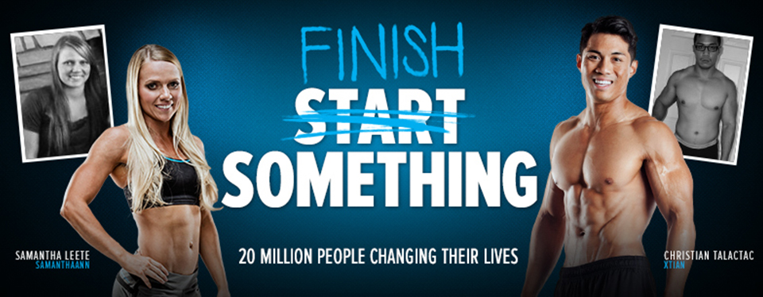
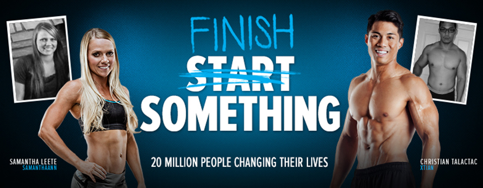

Fitness Terminator
Mr. Olympia titles, Arnold Schwarzenegger was a promising young bodybuilder
You are not logged in.
Welcome, USER
Your AIFA app - Fitness Artificial Intelligence will guide through exercises with timed, step-by-step using image and video instructions to complete with encouragement! Whether you are doing bodyweight exercises at home or lifting weights at the gym and even on the beautiful day running at the parks you will be able to do some exercise.


 

Mr. Olympia titles, Arnold Schwarzenegger was a promising young bodybuilder


BodyCombat is a high-energy martial arts-inspired workout that is totally non-contact.